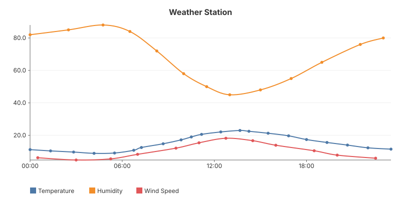
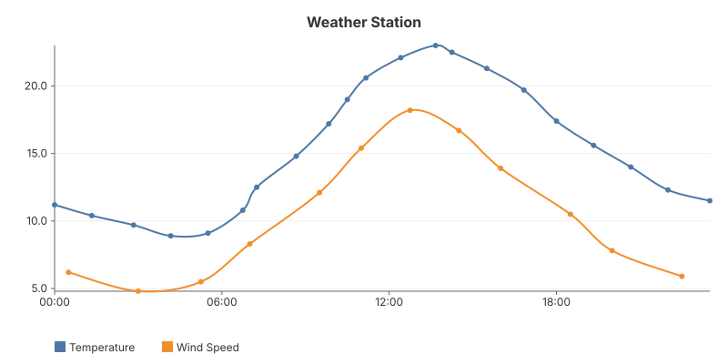

05 — Interactive HTMX
Toggle series visibility without a page reload. Clicking a series name fires an HTMX request; the server re-renders the chart with WithHiddenSeries and returns just the SVG fragment. No custom JavaScript — just HTMX attributes and gogal's built-in hidden series support.


The pattern
The HTMX page loads the chart fragment via hx-get="/chart". Toggle buttons below the chart send requests with ?hidden=Humidity,Wind Speed to control which series are hidden.
chart := gogal.NewLineChart(
gogal.WithVariant(gogal.Static),
gogal.WithTitle("Weather Station"),
gogal.WithGrid(true),
gogal.WithSmooth(true),
gogal.WithHiddenSeries(hidden...),
)
chart.Add("Temperature", temp)
chart.Add("Humidity", humidity)
chart.Add("Wind Speed", wind)
WithHiddenSeries(names...) tells the renderer to skip those series' paths but keep them in the legend (shown with strikethrough). The axis scaling only considers visible series, so the chart rescales automatically when you toggle.
The HTML shell
<div id="chart-container"
hx-get="/chart"
hx-trigger="load"
hx-swap="innerHTML">
Loading...
</div>
The toggle endpoint
http.HandleFunc("/chart", func(w http.ResponseWriter, r *http.Request) {
hidden := strings.Split(r.URL.Query().Get("hidden"), ",")
renderChart(hidden).Render(w)
// ... render toggle buttons with hx-get attributes
})
No framework needed — the toggle logic is ~30 lines of Go. Each button computes the new
hidden parameter (add or remove its series name) and sets hx-get="/chart?hidden=...". The server does the rest.
Running it
task example:05
Serves at http://localhost:1344. Click series names below the chart to toggle them.
API reference
| Function | Purpose |
|---|---|
WithHiddenSeries(names...) |
Hide named series (paths hidden, legend shows strikethrough) |
Series.Hidden |
Per-series visibility flag (set via config) |